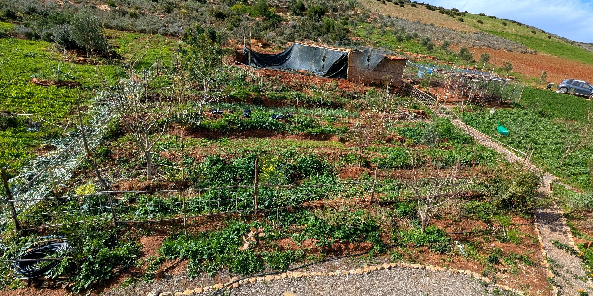
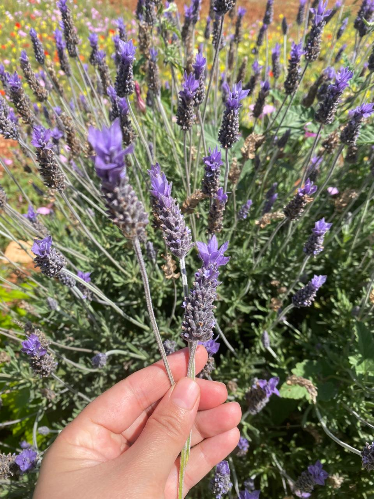

Meals from the gardens, shared beneath olive trees, in the spirit of Moroccan hospitality.
The Land
From forgotten land to living ecosystem
Once degraded by erosion, this hillside is returning to life through regenerative agriculture, water restoration, and biodiversity.

Restoring the land
Rebuilding soil through terraces, organic practice, and traditional knowledge.

A living ecosystem
A landscape where plants, pollinators, and wildlife are returning.

Growing with the seasons
A Mediterranean landscape that feeds people while following nature's rhythm.